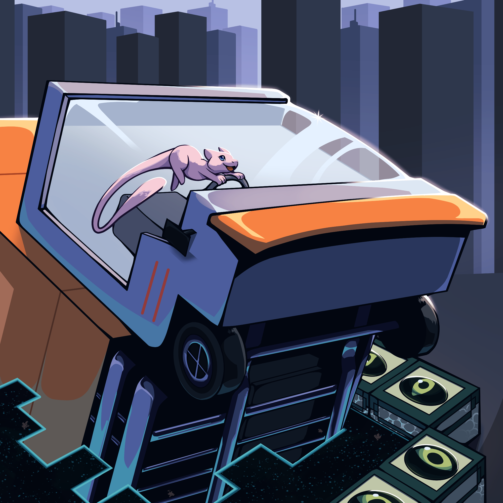

Last Chapter
It's a plan that makes so much sense, I'm not sure why no one's tried it before. If a Truck-kun brought me here, surely a Truck-kun can get me back, right? As luck would have it, I'm able to locate my chariot home close by. I begin to push, and suddenly realize I have no idea how just pushing is going to get me to another world. I'm chagrined and stop pushing, but recognize a familiar ball back where this Truck-kun originally was. Curious, I pick it up and toss it.
Epilogue
To my surprise, a Mew pops out! It beams its thoughts directly into my mind:
"Thank you so much for freeing me! I've been stuck under there for nearly 30 years! Is there anything I can do to help you in return?"
I thank them for the offer and let them know I'm trying to get back to my original world.
"No problem! I know just how to do that! Go stand next to the end portal, and hop in on the count of 3."
Mew gets in the driver's seat of Truck-kun and uses their psychic powers to start it up. On the count of 3, I jump into the end portal, but as I look up, Mew and Truck-kun are also going into the portal...?! Just as I touch the portal, Truck-kun collides into me, and everything goes black.
When I open my eyes, I'm lying on the side of the street. There's commotion all around me.
"That truck almost hit a kid!"
"That high-schooler saved them!"
"They're a hero!"
Does that mean... everything I just experienced was a dream? Certainly, that kind of isekai adventure doesn't happen to people in real life. I know that, but I can't help but feel disappointed. Ah, well. It's not like I can just say "Status" and--
In front of me pops up...!
THE END
Congratulations on finishing LN Hunt!
Before you go, please let us know your thoughts via the feedback form. You may also join our finishers’ Discord server.